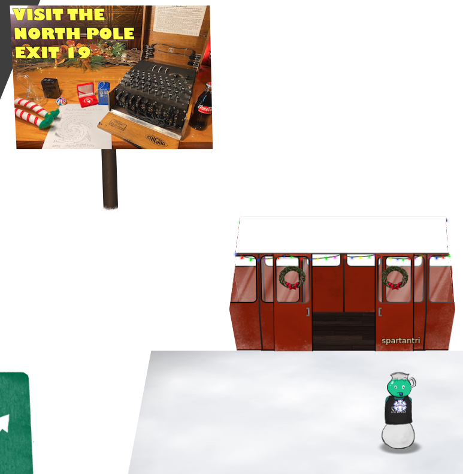
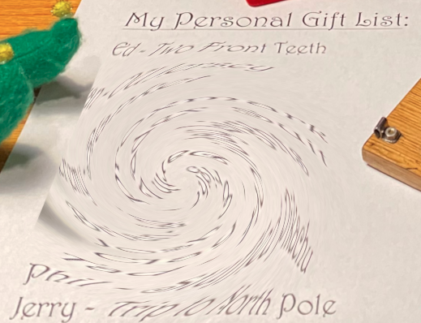
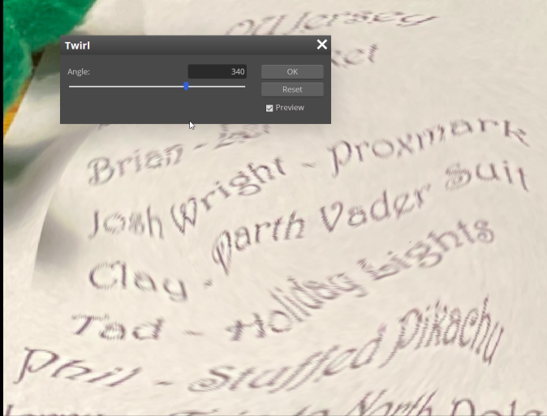

1) Uncover Santa's Gift list
Difficulty: 1/5

There is a photo of Santa's Desk on that billboard with his personal gift list. What gift is Santa planning on getting Josh Wright for the holidays? Talk to Jingle Ringford at the bottom of the mountain for advice.

ANSWER: proxmark
Billboard

The image contains the letter that require adjusting the perspective and adjust the whirl and pinch distort filter to recover the list. It can be fixed in GIMP or using an online editor such as https://www.photopea.com/.

